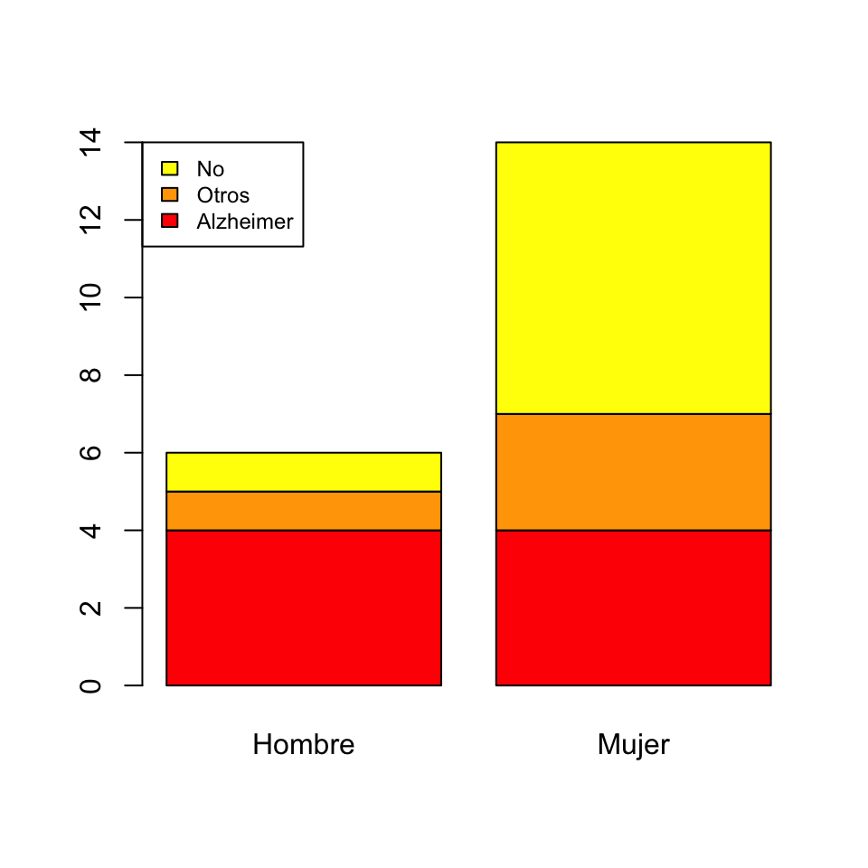

Lección 1 Distribuciones muestrales
1.1 Estimadores
En un problema típico de estadística inferencial:
Queremos conocer el valor de una característica en el total de una población, pero no podemos medir esta característica en todos los individuos de la población.
Entonces, extraemos una muestra de la población, medimos la característica en los individuos de esta muestra, calculamos algo con los datos obtenidos e inferimos el valor de la característica en el global de la población.
Inmediatamente surgen varias preguntas, que responderemos entre esta lección y la próxima:
- ¿Cómo tiene que ser la muestra?
- ¿Qué tenemos que calcular?
- ¿Con qué precisión podemos inferir la característica de la población?
¿Qué tipo de muestra tenemos que tomar? Vamos a suponer de ahora en adelante que tomamos muestras aleatorias simples. Esto incluye las muestras aleatorias sin reposición si la población es mucho más grande que la muestra, ya que entonces no hay diferencia práctica entre permitir y prohibir las repeticiones. En algunos casos muy concretos permitiremos muestras aleatorias sin reposición en general.
¿Qué calculamos? Pues un estimador: alguna función adecuada aplicada a los valores de la muestra, y que dependerá de lo que queramos estimar. Por ejemplo:
Si queremos estimar la altura media de los estudiantes de la UIB, tomaremos una muestra aleatoria de estudiantes de la UIB, mediremos sus alturas y calcularemos su media aritmética.
Si queremos estimar la proporción de estudiantes de la UIB que han pasado la COVID-19, tomaremos una muestra aleatoria de estudiantes de la UIB, les haremos un test de anticuerpos y calcularemos la proporción muestral de positivos en la muestra.
Si queremos estimar el riesgo relativo para un estudiante de la UIB de suspender alguna asignatura si es fumador, tomaremos una muestra aleatoria de estudiantes de la UIB, anotaremos si fuman o no y si han suspendido alguna asignatura o no, y calcularemos el cociente entre las proporciones muestrales de suspensos entre los fumadores y los no fumadores de la muestra.
1.2 La media muestral
Cuando queremos estimar el valor medio de una variable sobre una población, tomamos una muestra de valores y calculamos su media aritmética, ¿verdad? Pues eso es la media muestral.
Dada una variable aleatoria \(X\), llamamos media muestral de (muestras de) tamaño \(n\) a la variable aleatoria \(\overline{X}\) “Tomamos una muestra aleatoria simple de tamaño \(n\) de \(X\) y calculamos la media aritmética de sus valores”.
Veamos algunas propiedades de la distribución muestral de \(\overline{X}\):
Teorema 1.1 Sea \(X\) una variable aleatoria cualquiera de media \(\mu_X\) y desviación típica \(\sigma_X\), y sea \(\overline{X}\) la media muestral de tamaño \(n\) de \(X\). Entonces:
\(E(\overline{X})=\mu_X\)
\(\sigma(\overline{X})=\dfrac{\sigma_X}{\sqrt{n}}\)
Formalmente, la media muestral de tamaño \(n\) de una variable aleatoria \(X\) se define como la variable aleatoria \[ \overline{X}=\frac{X_1+\cdots+X_n}{n} \] donde \(X_1,\ldots,X_n\) son \(n\) copias independientes de la variable \(X\).
Entonces, por la linealidad de la esperanza \[ E(\overline{X})=\frac{E(X_1)+\cdots+E(X_n)}{n}=\frac{n\cdot \mu_X}{n}=\mu_X \] porque, como \(X_1,\ldots,X_n\) son copias de \(X\), \(E(X_1)=\cdots=E(X_n)=\mu_X\).
Y por la linealidad de la varianza de la suma de variables independientes \[ \sigma(\overline{X})^2=\frac{\sigma(X_1)^2+\cdots+\sigma(X_n)^2}{n^2}=\frac{n\cdot \sigma_X^2}{n^2}=\frac{\sigma_X^2}{n} \] porque, de nuevo, como \(X_1,\ldots,X_n\) son copias de \(X\), \(\sigma(X_1)^2=\cdots=\sigma(X_n)^2=\sigma_X^2\).
Que \(E(\overline{X})\) sea \(\mu_X\) nos indica que \(\overline{X}\) sirve para estimar \(\mu_X\), porque su valor esperado es \(\mu_X\):
Si calculáramos muchas medias de muestras aleatorias de \(X\), es muy probable que, de media, obtuviéramos un valor muy cercano a \(\mu_X\).
Cuando el valor esperado de un estimador es precisamente el parámetro poblacional que se quiere estimar, se dice que el estimador es insesgado. Así, el primer punto del teorema anterior nos dice que la media muestral \(\overline{X}\) es un estimador insesgado de la media poblacional \(\mu_X\).
Que \(\sigma(\overline{X})\) sea \(\sigma_X/\sqrt{n}\) implica que la variabilidad de las medias muestrales crece con la variabilidad de \(X\) y decrece si tomamos muestras de mayor tamaño. Esto último es razonable. Aunque la variabilidad de \(X\) sea grande, si tomamos muestras grandes, es probable que los valores extremos se compensen al calcular sus medias y éstas tengan menos variabilidad que la variable \(X\) original.
A \(\sigma_X/\sqrt{n}\) se le llama el error típico de la media muestral (para la variable aleatoria \(X\) y muestras de tamaño \(n\)).
Ejemplo 1.1 Vamos a realizar un experimento. Vamos a tomar una población de 106 sujetos y una variable aleatoria \(X\) que sobre cada sujeto toma un valor real entre 0 y 1, todos estos valores con la misma probabilidad. Llamaremos X al vector con los 106 valores de esta variable aleatoria, y dibujaremos un histograma de este vector de números para que veáis que los valores salen muy dispersos. Mostramos el código de R para que podáis repetir el experimento por vuestra cuenta; como es una simulación, cada vez que lo ejecutéis dará resultados diferentes, pero el mismo efecto global.
X=runif(10^6)
hist(X,freq=FALSE,main="Histograma de X",xlab="",ylab="Densidad",col="light blue")
La desviación típica \(\sigma_X\) de la variable \(X\) sobre nuestra población es
sd(X)*sqrt((10^6-1)/10^6)## [1] 0.2884943sd calcula la desviación típica muestral, con denominador \(\sqrt{n-1}\). Para calcular la desviación típica de verdad, con denominador \(\sqrt{n}\) hay que multiplicarla por \(\sqrt{n-1}\) y dividirla por \(\sqrt{n}\).
Ahora vamos a tomar 1000 medias muestrales de tamaño 100 de esta población, las organizaremos en un vector que llamaremos Medias y dibujaremos un histograma de este vector de medias.
Medias=replicate(1000,mean(sample(X,100,replace=TRUE)))
hist(Medias, breaks=15,freq=FALSE,main="Histograma de las medias muestrales",xlab="",ylab="Densidad",col="light blue",xlim=c(0.4,0.6))
Podéis observar cómo los valores de estas medias se concentran alrededor de 0.5. Veamos su desviación típica:
sd(Medias)*sqrt((1000-1)/1000)## [1] 0.02921408Fijaos cómo se acerca mucho al valor \(\sigma_X/\sqrt{100}=0.0288494\) predicho por el teorema anterior. No coinciden exactamente, porque \(\sigma_X/\sqrt{100}\) es el valor de la desviación típica poblacional de \(\overline{X}\), es decir, para toda la “población” de medias muestrales de muestras aleatorias simples de tamaño 100 de nuestra población de partida, y nosotros hemos tomado una muestra de “solo” 1000 medias de estas.
La media muestral \(\overline{X}\) de tamaño \(n\) de una variable aleatoria \(X\) se interpreta formalmente como la variable aleatoria obtenida tomando \(n\) copias independientes \(X_1,\ldots,X_n\) de \(X\) y calculando \[ \overline{X}=\frac{X_1+\cdots+X_n}{n}. \]
Por lo tanto, es una combinación lineal de \(n\) copias independientes de \(X\). Recordando que una combinación de variables aleatorias normales independientes es normal, tenemos el resultado siguiente:
Teorema 1.2 Si \(X\) es \(N(\mu_X,\sigma_X)\), entonces \(\overline{X}\) es \(N(\mu_X,\sigma_X/\sqrt{n})\), y por lo tanto \[ Z=\frac{\overline{X}-\mu_X}{\sigma_X/\sqrt{n}} \] es \(N(0,1)\).
Si \(X\) no es normal, la tesis del teorema anterior sigue siendo cierta “aproximadamente” siempre y cuando \(n\) sea grande. Este resultado, llamado el Teorema Central del Límite es, como su nombre indica, uno de los más importantes en estadística.
Teorema 1.3 Sea \(X\) una variable aleatoria cualquiera de esperanza \(\mu_X\) y desviación típica \(\sigma_X\). Si \(n\) es suficientemente grande, \(\overline{X}\) es aproximadamente \(N(\mu_X, {\sigma_X}/{\sqrt{n}})\) y por lo tanto \[ Z=\frac{\overline{X}-\mu_X}{{\sigma_X}/{\sqrt{n}}} \] es aproximadamente \(N(0,1)\).
Dos observaciones:
¿Cuándo una muestra es lo suficientemente grande como para poder invocar el Teorema Central del Límite? En realidad, depende de la \(X\). Cuánto más se parezca \(X\) a una variable normal, más pequeñas pueden ser la muestras. Por fijar un valor, aceptaremos que “suficientemente grande” es \(n\geqslant 40\).
¿Qué quiere decir que una variable aleatoria sea “aproximadamente” normal? Pues que su función de distribución \(F_X\) toma valores muy cercanos a la función de distribución de una normal. Recordad cómo una \(B(n,p)\) con \(n\) grande era “aproximadamente normal” en la lección anterior.

En resumen:
Si \(X\) es normal, \(\overline{X}\) es \(N(\mu_X,{\sigma_X}/{\sqrt{n}})\).
Si \(X\) no es normal pero \(n\) es grande (pongamos \(n\geqslant 40\), aunque puede ser menor si \(X\) se parece a una normal y seguramente tendrá que ser mayor si \(X\) es muy diferente de una normal), \(\overline{X}\) es aproximadamente \(N(\mu_X,{\sigma_X}/{\sqrt{n}})\).
1.3 La proporción muestral
Cuando queremos estimar la proporción de sujetos de una población que tienen una determinada característica, tomamos una muestra y calculamos la proporción de sujetos de la muestra con esta característica. Esta será la proporción muestral de sujetos con esta característica en nuestra muestra.
Dada una variable aleatoria \(X\) de Bernoulli \(Be(p_X)\), la proporción muestral de (muestras de) tamaño \(n\), \(\widehat{p}_X\), es la variable aleatoria consistente en tomar una muestra aleatoria de tamaño \(n\) de \(X\) y calcular la proporción de éxitos en la muestra: es decir, contar el número total de éxitos y dividir el resultado por \(n\).
Fijaos en que \(\widehat{p}_X\) es un caso particular de media muestral \(\overline{X}\): estamos calculando medias muestrales de muestras aleatorias simples de la variable de Bernoulli \(X\). Por lo tanto, todo lo que hemos dicho para medias muestrales vale también para proporciones muestrales:
Teorema 1.4 Si \(X\) es una variable aleatoria de Bernoulli con probabilidad poblacional de éxito \(p_X\) y \(\widehat{p}_X\) es la proporción muestral de tamaño \(n\):
\(E(\widehat{p}_X)=p_X\)
\(\sigma({\widehat{p}_X})=\sqrt{\dfrac{p_X(1-p_X)}{n}}\)
\(E(\widehat{p}_X)=p_X\) nos dice que \(\widehat{p}_X\) es un estimador insesgado de \(p_X\). Si calculáramos muchas proporciones muestrales de muestras aleatorias de \(X\), es muy probable que, de media, obtuviéramos un valor muy cercano a la proporción poblacional de éxitos \(p_X\).
\(\sigma({\widehat{p}_X})=\sqrt{\dfrac{p_X(1-p_X)}{n}}\) nos dice que, fijada la variable \(X\), si tomamos muestras de tamaño mayor, la variabilidad de los resultados de \(\widehat{p}_X\) disminuye.
Si tomamos muestras aleatorias simples de tamaño \(n\) de una variable aleatoria Bernoulli \(X\):
\(\sqrt{\dfrac{p_X(1-p_X)}{n}}\) es el error típico de la variable aleatoria \(\widehat{p}_X\): su desviación típica.
Para cada muestra, \(\sqrt{\dfrac{\widehat{p}_X(1-\widehat{p}_X)}{n}}\) es el error típico de la muestra, que estima el error típico de \(\widehat{p}_X\).
Y como la proporción muestral es un caso particular de media muestral, por el Teorema Central del Límite tenemos el resultado siguiente:
Teorema 1.5 Si \(n\) es grande y las muestras aleatorias son simples, \(\widehat{p}_X\) es aproximadamente \(N\big (p_X,\sqrt{{p_X(1-p_X)}/{n}}\big)\) y por lo tanto \[ \frac{\widehat{p}_X-p_X}{\sqrt{\frac{{p}_X(1-{p}_X)}{n}}} \] es aproximadamente \(N(0,1)\).
1.4 La varianza muestral
Dada una variable aleatoria \(X\), llamamos:
Varianza muestral de (muestras de) tamaño \(n\), \(\widetilde{S}_{X}^2\), a la variable aleatoria consistente en tomar una muestra aleatoria simple de tamaño \(n\) de \(X\) y calcular la varianza muestral de sus valores.
Desviación típica muestral de (muestras de) tamaño \(n\), \(\widetilde{S}_{X}\), a la variable aleatoria consistente en tomar una muestra aleatoria simple de tamaño \(n\) de \(X\) y calcular la desviación típica muestral de sus valores.
Formalmente, estas variables se definen tomando \(n\) copias independientes \(X_1,\ldots,X_n\) de \(X\) y calculando \[ \widetilde{S}_{X}^2=\frac{\sum_{i=1}^n (X_{i}-\overline{X})^2}{n-1},\quad \widetilde{S}_{X}=+\sqrt{\widetilde{S}_{X}^2} \]
Tenemos los dos resultados siguientes. El primero nos dice que \(\widetilde{S}_{X}^2\) es un estimador insesgado de la varianza poblacional \(\sigma_{X}^2\).
Teorema 1.6 \(E(\widetilde{S}_{X}^2)=\sigma_{X}^2\).
Por lo tanto, esperamos que la varianza muestral de una muestra aleatoria simple de \(X\) valga \(\sigma_{X}^2\), en el sentido usual de que si tomamos muestras aleatorias simples de \(X\) de tamaño \(n\) grande y calculamos sus varianzas muestrales, muy probablemente obtengamos de media un valor muy cercano a \(\sigma_{X}^2\).
El segundo resultado nos dice que si la variable \(X\) es normal, un múltiplo adecuado de \(\widetilde{S}_{X}^2\) tiene distribución muestral conocida, lo que nos permitirá calcular probabilidades de sucesos relativos a \(\widetilde{S}_{X}^2\).
Teorema 1.7 Si \(X\) es \(N(\mu_X,\sigma_X)\) y tomamos muestras de tamaño \(n\), la variable aleatoria \[ \chi^2= \dfrac{(n-1)\widetilde{S}_{X}^2}{\sigma_{X}^2} \] tiene una distribución conocida, llamada ji cuadrado con \(n-1\) grados de libertad, \(\chi_{n-1}^2\).
La distribución \(\chi_\nu^2\), donde \(\nu\) es un parámetro llamado sus grados de libertad, es la distribución de probabilidad de la suma de los cuadrados de \(\nu\) variables aleatorias normales estándar independientes. Para R es chisq. Os puede interesar recordar que una variable \(\chi_\nu^2\) de tipo ji cuadrado con \(\nu\) grados de libertad:
Tiene valor esperado \(E(\chi_\nu^2)=\nu\) y varianza \(\sigma(\chi_\nu^2)^2=2 \nu\).
Su función de distribución es estrictamente creciente.
Tiene una distribución asimétrica a la derecha, como muestra el gráfico siguiente:

A medida que el número de grados de libertad \(\nu\) crece, la asimetría tiende a desaparecer y, por el Teorema Central del Límite, si \(\nu\) es lo bastante grande, la distribución \(\chi_\nu^2\) se aproxima a la de una variable normal \(N(\nu,\sqrt{2\nu})\).

Tened cuidado:
Si la variable poblacional \(X\) no es normal, la conclusión del Teorema 1.7 no es verdadera.
Aunque \(X\) sea normal, \(E(\widetilde{S}_{X})\neq \sigma_{X}\). La desviación típica muestral es un estimador sesgado de \(\sigma_{X}\) (pero tiene otras buenas propiedades que hacen que la usemos igualmente).
Ya lo hemos comentado antes. Si \(S^2_{X}\) es la varianza “a secas” (dividiendo por \(n\) en vez de por \(n-1\)), \(E(S^2_{X})\neq \sigma^2_{X}\). Esto lo podéis comprobar fácilmente, porque \(S_X^2\) se obtiene a partir de \(\widetilde{S}_{X}^2\) cambiando el denominador, \[ S_X^2=\frac{n-1}{n} \widetilde{S}_{X}^2 \] y por lo tanto \[ E(S_X^2)=\frac{n-1}{n}E(\widetilde{S}_{X}^2)=\frac{n-1}{n}\sigma^2_{X} \]
1.5 La distribución t de Student
Recordad que si la variable poblacional \(X\) es \(N(\mu_X,\sigma_X)\) y tomamos muestras aleatorias simples de tamaño \(n\), entonces la variable \[ \frac{\overline{X}-\mu_X}{\sigma_{X}/\sqrt{n}} \] es normal estándar. Desde el punto de vista teórico, para obtener fórmulas, esto será útil, pero normalmente no nos sirve para calcular la probabilidad de que a \(\overline{X}\) le pase algo, porque casi nunca sabemos la desviación típica poblacional \(\sigma_{X}\). ¿Qué pasa si la estimamos por medio de \(\widetilde{S}_{X}\) con la misma muestra con la que calculamos \(\overline{X}\)? Pues que el resultado siguiente nos salva el día, porque la variable que resulta tiene distribución conocida.
Al denominador \(\widetilde{S}_{X}/\sqrt{n}\) de la \(T\) del teorema anterior se le llama el error típico de la muestra, y estima el error típico \(\sigma_X/\sqrt{n}\) de la media muestral \(\overline{X}\).
Para R, la distribución t de Student es t, a secas. Algunas propiedades que conviene que recordéis de las variables \(T_\nu\) que tienen distribución \(t\) de Student con \(\nu\) grados de libertad, \(t_\nu\):
Su valor esperado es \(E(T_\nu)=0\) y su varianza es \(\sigma(T_\nu)=\dfrac{\nu}{\nu-2}\) (en realidad esto solo es verdad si \(\nu\geqslant 3\), pero no hace falta recordarlo).
Su función de distribución es estrictamente creciente.
Su función de distribución es simétrica respecto de 0 (como la de una \(N(0,1)\)): \[ P(T_\nu\leqslant-x)=P(T_\nu\geqslant x)=1-P(T_\nu\leqslant x) \]
Si \(\nu\) es grande (digamos, de nuevo, \(\nu\geqslant 40\)), \(T_\nu\) es aproximadamente una \(N(0,1)\) (pero con un poco más de varianza, porque \(\nu/(\nu-2)>1\), y por lo tanto un poco más achatada). Esto es consecuencia del Teorema Central del Límite.


Denotaremos por \(t_{\nu,q}\) el \(q\)-cuantil de una variable aleatoria \(T_{\nu}\) con distribución \(t_\nu\). Es decir, \(t_{\nu,q}\) es el valor tal que \[ P(T_{\nu}\leqslant t_{\nu,q})=q \] Entonces:
Por la simetría de la distribución \(t_\nu\), \[ t_{\nu,q}=-t_{\nu,1-q}. \] Exactamente lo mismo que pasaba con la normal estándar
Si \(\nu\) es grande, \(T_\nu\) será aproximadamente una \(N(0,1)\) y por lo tanto \(t_{\nu,q}\) es aproximadamente igual a \(z_q\).
No confundáis:
Desviación típica de una variable aleatoria: El parámetro poblacional, normalmente desconocido. Es \(\sigma_X\).
Desviación típica (muestral o no) de una muestra: El estadístico que calculamos sobre la muestra. Es \(\widetilde{S}_X\) (la muestral) o \({S}_X\) (la “a secas”).
Error típico de la media muestral: La desviación típica de la variable media muestral. Es \(\sigma_X/\sqrt{n}\), con \(n\) el tamaño de las muestras.
Error típico de una muestra: Estimación del error típico del estimador a partir de la muestra. Es \(\widetilde{S}_X/\sqrt{n}\), con \(n\) el tamaño de la muestra.
Fijaos en que el denominador \(\sqrt{n}\) hace que, en general, los errores típicos sean mucho más pequeños que las desviaciones típicas. Id con cuidado, porque esto se usa a menudo en artículos para enmascarar los resultados. Si una muestra ha salido con una dispersión muy grande, se da su error típico en vez de su desviación típica y parece que ha salido más concentrada.
1.6 Test
(1) Si el tamaño de una muestra aleatoria simple aumenta (marca todas las afirmaciones correctas):
- La media muestral siempre disminuye.
- El error típico de la media muestral siempre disminuye.
- El error típico de la muestra siempre disminuye.
- La varianza muestral siempre aumenta.
- El número de grados de libertad del estimador \(\chi^2\) asociado a la varianza muestral siempre aumenta.
- Ninguna de las otras afirmaciones es correcta
(2) Si queremos disminuir a la mitad el error típico de la media muestral:
- Tenemos que aumentar en un 50% el tamaño de las muestras.
- Tenemos que doblar el tamaño de las muestras.
- Tenemos que cuadruplicar el tamaño de las muestras.
- Tenemos que dividir por 2 el tamaño de las muestras.
- Tenemos que dividir por 4 el tamaño de las muestras.
- Ninguna de las otras respuestas es correcta.
(3) La prevalencia de una afección en una población es del 10%. Si estimamos dicha prevalencia repetidamente mediante las proporciones muestrales de muestras aleatorias simples de tamaño 1000, estas estimaciones siguen una distribución que (marca todas las afirmaciones correctas):
- Es una distribución muestral.
- Es aproximadamente normal.
- Es binomial.
- Tiene media 0.1.
- Tiene media 900.
- Ninguna de las otras afirmaciones es correcta
(4) Sobre una muestra de 100 mujeres se obtuvo una concentración media de la hemoglobina de 10 con una desviación típica de 2. ¿Qué vale el error típico de la muestra (para la media muestral, se entiende)?
- 0.02
- 0.04
- 0.2
- 0.4
- 1
- Ninguno de los anteriores
(5) ¿Cuáles de las afirmaciones siguientes sobre la media muestral son verdaderas? Marca todas las respuestas correctas.
- Si la distribución poblacional es normal, siempre coincide con la media de la distribución poblacional.
- Si la distribución poblacional es normal, siempre coincide con la mediana de la distribución poblacional.
- Siempre sirve para estimar la media poblacional, aunque la distribución poblacional no sea normal.
- Si la distribución poblacional es normal, sirve para estimar la mediana poblacional.
- Se calcula sumando todos los valores de la muestra y dividiendo por \(n-1\), donde \(n\) indica el tamaño de la muestra.
- Ninguna de las otras respuestas es correcta.
(6) La concentración de un cierto metabolito en sangre tiene un valor medio \(\mu\). Si tomamos muestras aleatorias simples de 20 individuos, calculamos su media muestral \(\overline{X}\) y su desviación típica muestral \(\widetilde{S}_X\) (marca la continuación más correcta):
- El estadístico \(\frac{\overline{X}-\mu}{\widetilde{S}_X/\sqrt{n}}\) tiene siempre distribución normal.
- El estadístico \(\frac{\overline{X}-\mu}{\widetilde{S}_X/\sqrt{n}}\) tiene siempre distribución t de Student.
- El estadístico \(\frac{\overline{X}-\mu}{\widetilde{S}_X/\sqrt{n}}\) tiene distribución normal si la concentración sigue una ley normal.
- El estadístico \(\frac{\overline{X}-\mu}{\widetilde{S}_X/\sqrt{n}}\) tiene distribución t de Student si la concentración tiene distribución normal.
- El estadístico \(\frac{\overline{X}-\mu}{\widetilde{S}_X/\sqrt{n}}\) no tiene nunca ni distribución normal ni distribución t de Student, porque las muestras no son lo suficientemente grandes.
(7) Tenemos una variable aleatoria \(X\) normal de media \(\mu\) y desviación típica \(\sigma\). Tomamos muestras aleatorias simples de tamaño \(n\), y denotamos por \(\widetilde{S}_X\) su desviación típica muestral. ¿Cuáles de las afirmaciones siguientes son verdaderas? Marca todas las respuestas verdaderas:
- \(E(\widetilde{S}_X^2)=\sigma^2\).
- \(E(\widetilde{S}_X)=\sigma\).
- \(\widetilde{S}_X^2\) sigue una distribución ji cuadrado con \(n-1\) grados de libertad.
- \((n-1)\widetilde{S}_X^2/\sigma^2\) sigue una distribución ji cuadrado con \(n-1\) grados de libertad.
- \((n-1)\widetilde{S}_X/\sigma\) sigue una distribución ji cuadrado con \(n-1\) grados de libertad.
- Todas las otras respuestas son falsas.